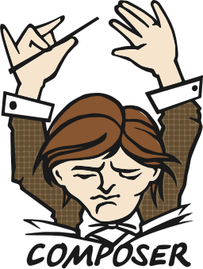

Development Automation with Composer, Robo and Docker
The technology that powers the Ballast project
Shawn Duncan, Technical Architect
 This work is licensed under a Creative Commons Attribution 4.0 International License.
This work is licensed under a Creative Commons Attribution 4.0 International License.
Introduction
- Drupal.org: FatherShawn
- Twitter: @FatherShawn
- These slides: talks.shawnduncan.org/cache_bin
Developer Tasks
- Classic CMS Needs
- Web server
- Database
- PHP
- Dependency Management
- New frontend tools: npm
- Javascript libraries (production)
- Drupal core
- Drupal contributed modules
- PHP libraries beyond Drupal
- Sync with a remote server
- Compile the theme
- Manage Drupal from the command line
Composer
Composer
The hub technology of this project.
- Core purpose is dependency management
- Builds the autoloader
- Event system is the foundation for automation
- Installation and other documentation: getcomposer.org
Composer
Managing Dependencies
Snippet from composer.json for Formassembly module
{
"require": {
"fathershawn/oauth2-formassembly": "^1.0"
}
}
Composer
Managing Dependencies
Snippet from composer.json for fathershawn/oauth2-formassembly
{
"require": {
"php": "^5.6 || ^7.0",
"league/oauth2-client": "^2.0"
}
}
Composer
Events
- Full list at https://getcomposer.org/doc/articles/scripts.md
- Ballast uses:
- post-install-cmd
- Occurs after the
installcommand has been executed with a lock file present. - post-update-cmd
- occurs after the
updatecommand has been executed, or after theinstallcommand has been executed without a lock file present.
- Inherited from the
drupal-composer/drupal-projectto verify Composer version.- pre-install-cmd
- Occurs before the
installcommand has been executed with a lock file present. - pre-update-cmd
- occurs before the
updatecommand has been executed, or after theinstallcommand has been executed without a lock file present.
Composer
Events
Snippet from composer.json for digitalpulp/ballast
{
"scripts": {
"drupal-scaffold": "DrupalComposer\\DrupalScaffold\\Plugin::scaffold",
"robo": "@php scripts/robo/BallastRunner.php --ansi",
"pre-install-cmd": [
"DrupalProject\\composer\\ScriptHandler::checkComposerVersion"
],
"pre-update-cmd": [
"DrupalProject\\composer\\ScriptHandler::checkComposerVersion"
],
"post-install-cmd": [
"DrupalProject\\composer\\ScriptHandler::createRequiredFiles",
"composer robo setup:drupal",
"composer robo setup:prerequisites"
],
"post-update-cmd": [
"DrupalProject\\composer\\ScriptHandler::createRequiredFiles",
"composer robo setup:drupal",
"composer robo setup:prerequisites"
]
},
}
Composer
Adding new Drupal modules
composer require drupal/module_nameComposer
Upgrade Core
composer update drupal/core webflo/drupal-core-require-dev webflo/drupal-core-strictRobo
Robo
- Written in PHP by Greg Anderson, Michael Bodnarchuk and Moshe Weitzman
- Task runner
- Installed with Composer
- Documentation: robo.li
Robo
Base Usage
Robo creates the command file
robo initRobo
Base Usage
Public methods become executable commands
/**
* Prints the database connection info for use in SQL clients.
*/
public function connectSql() {
$ip = $this->getDockerMachineIp();
$port = $this->getSqlPort();
$this->io()->title('Database Info');
$this->io()->text("The Docker Machine host is: $ip");
$this->io()->text("Connect to port: $port");
$this->io()->text("Username, password, and database are all 'drupal'");
$this->io()->note("Both the ip and port can vary between re-boots");
}
robo connect:sqlRobo
Usage in Ballast
Commands can be split into multiple classes with a front controller
-| scripts
BallastRunner.php
----| src
------| Commands
DeployCommands.php
DockerCommands.php
DockerMachineTrait.php
FrontEndTrait.php
RemoteRebuildCommands.php
SetupCommands.php
------| Utilities
Config.php
Robo
Usage in Ballast
Dynamic Configuration
$collection->addTask(
$this->taskReplaceInFile("$root/setup/docker/docker-compose.yml")
->from('{site_shortname}')
->to($this->config->get('site_shortname'))
);
Docker
Docker
Virtual Process vs. Virtual Machine
- Convention: Like OOP, set just one purpose per container
- Inject commands into the container
Docker
Compose
- Define multiple containers in a yaml file
- All share a network, start and stop together
Ahoy
An abstraction layer for DX
Open Q & A
“Heeded my words not, did you? Pass on what you have learned. Strength, mastery.”
“But weakness, folly, failure also. Yes, failure most of all. The greatest teacher, failure is.”